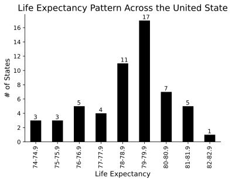

Peer Review
Ben Kizaric provides us constructive feedback on our figure 1: “This is a good visualization, but I wonder if it might work better as a histogram instead of a bar chart. You might lose some control over displaying the specific ranges, but I think it would give a better idea of the distribution.” We made corresponding adjustments. In our first plot, we originally drew the distribution using bar plot. We changed this plot to a histogram because we think we are able to present the distribution of life expectancy more clearly.
Old Version
New Version

Here are the websites we used in our project
List of named color: https://matplotlib.org/3.1.0/gallery/color/named_colors.htmlHistogram plot: https://matplotlib.org/3.2.1/api/_as_gen/matplotlib.pyplot.hist.html
Cluster bar plot: https://matplotlib.org/3.1.0/gallery/lines_bars_and_markers/barchart.html
Geographic Map (shapefile for the US map): https://www.census.gov/geographies/mapping-files/time-series/geo/carto-boundary-file.htmlx